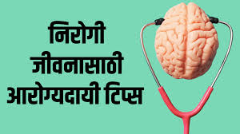

ऑनलाइन भाषा शिकण्याच्या प्लॅटफॉर्मसह सहकार्य करून आरोग्य ठिकाणीच्या कर्मचाऱ्यांना लघुकिंवा किमान किंमतीत भाषा कोर्सेस तक पोहोचण्याची सुविधा मिळते, त्यात त्याच्या वैद्यकीय संदर्भानुसार तयार केले जाऊ शकते.
सिम्युलेशन केंद्र
पूर्व-रेकॉर्डेड व्हिडिओ व्याख्याने
प्रवासी कार्यक्रमे
रुग्णालयांनी नवीन आणि अप्रमाणित परामर्शक कंपन्यास गंभीर राजकीय संकेत कार्यक्रमांच्या व्यापारी चक्र प्रबंधन कार्यांच्या आउटसोर्सिंगच्या कामांसाठी सतर्क राहू शकतात.
आरसीएम अनुकूलनामुळे व्यापारिक लाभाची स्पष्ट संदर्भित वातावरण दाखवण्यासाठी काही काळ आणि डेटा विश्लेषणाची आवश्यकता असू शकते.
उद्योग चॅलेंजेसला समाधान करणे
प्रेरणा रुग्णालयांना कंप्लेक्स बिलिंग आणि प्रतिपूर्ति चक्रांच्या चॅलेंजेसला दुर करण्यात मदत करून त्यांच्या आर्थिक आरोग्याची सुधारित करण्यात आहे.
रेव्हेन्यू चक्रांचे अनुकूलन करून रुग्णालयांनी रुग्णांची काळजीला जास्त महत्व देऊन त्यांना श्रेष्ठ आरोग्य परिणामे मिळवू शकतात.
तथ्य: 2020 मध्ये घेतलेल्या सर्वेक्षणानुसार, 67% अमेरिकन्स खर्च परेशानीता कारणी स्वास्थ्य काळजी घेतल्या, स्वास्थ्य निर्णय घेण्याच्या महत्वाच्या विचारांच्या खात्रीची मागणी केली.
गैर-संवादनशील आजारे, ज्यांची वैश्विक मृत्यूंची 71% जबाबदारी आहे, आरोग्यस्वास्थ्य आदते आणि नियमित तपासण्याच्या माध्यमातून त्यांना निवारण्याची महत्वाची मान्यता आहे.